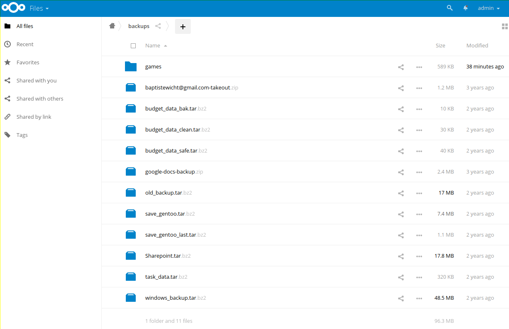

Migrated from owncloud 5 to Nextcloud 11
For several years now I've been using Owncloud running on one of my servers. I'm using simply using as a simple synchronization, I don't use any of the tons of fancy features they keep adding. Except from several synchronization issues, I haven't had too much issues with it.
However, I have had a very bad time with updates of Owncloud. The last time I tried, already long ago, was to upgrade from 5.0 to 6.0 and I never succeeded without losing all the configuration and having to do the resync. Therefore, I've still an Owncloud 5.0 running. From this time, I had to say that I've been lazy and didn't try again to upgrade it. Recently, I've received several mails indicating that this is a security threat.
Since I was not satisfied with updates in Owncloud and its security has been challenged recently, I figured it would be a good moment to upgrade to Nextcloud which is a very active fork of Owncloud that was forked by developers of Owncloud.
I haven't even tried to do an upgrade from such an old version to the last version of Nextcloud, it was doomed to fail. Therefore, I made a new clean installation. Since I only use the sync feature of the tool, it does not really matter, it is just some time lost to sync everything again, but nothing too bad.
I configured a new PostgreSQL on one of my servers for the new database and then installed Nextcloud 11 on Gentoo. It's a bit a pain to have a working Nginx configuration for Nextcloud, I don't advice to do it by hand, better take one from the official documentation, you'll also gain some security. One very bad thing in the installation process is that you cannot choose the database prefix, it's set like Owncloud. The problem with that is that you cannot install both Owncloud and Nextcloud on the same database which would be more practical for testing purpose. It's a bit retarded in my opinion, but not a big problem in the end. Other than these two points, everything went well and it was installation pretty nicely. Then, you should have your user ready to go.
As for the interface, I don't think there is a lot to tell here. Most of it is what you would except from this kind of tool. Moreover, I very rarely use the web interface or any of the feature that are not the sync feature. One thing that is pretty cool I think is the monitoring graphs in the Admin section of the interface. You can the number of users connected, the memory used and the CPU load. It's pretty useful if you share your Nextcloud between a lot of different users.
I didn't have any issue with the sync either. I used the nextcloud-client package on Gentoo directly and it worked perfectly directly. It took about 10 minutes to sync everything again (about 5GB). I'll have to do the same thing on my other computer as well, but I don't think I'll have any issue.
So far, I cannot say that this is better than Owncloud, I just hope the next upgrade will fare better than they did on Owncloud. Moreover, I also hope that the security that they promise is really here and I won't have any problem with it. I'll see in the future!
For more information about nextcloud and owncloud compared to each other, you can read this in-depth comparison, by David Feldman.
Comments
Comments powered by Disqus